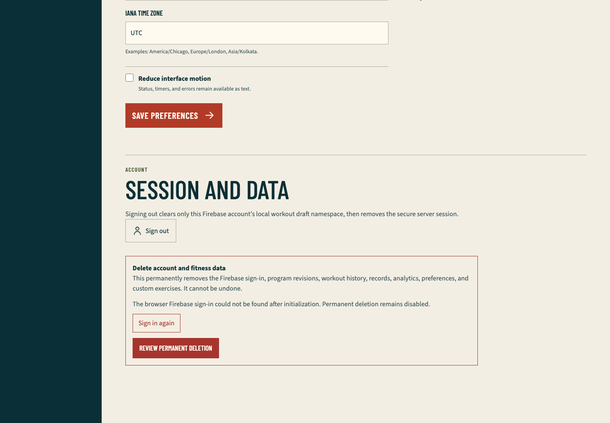
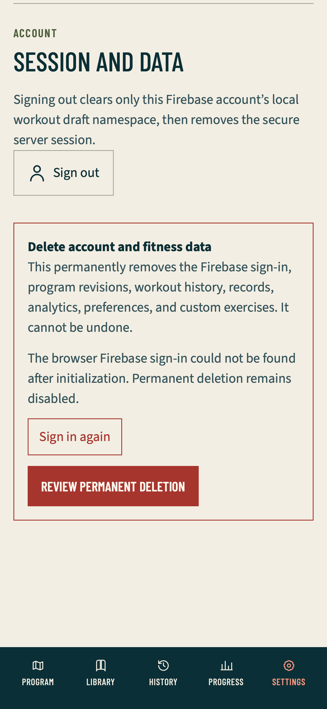

Launch readiness QA
Outcome
My Workout Pal is ready to launch. Exact application runtime a353067558323cc21361fa1919507ee890c0f983 is on local and GitHub main and is Ready as Vercel production deployment dpl_BCxN2q8qk5G1kNKkxNF2MzDLTqeB at my-workout-pal-chi.vercel.app. GitHub reports a successful Vercel deployment check for the same runtime.
The release includes the public five-day plan, both equipment profiles, the complete exercise library, exactly two approved demonstrations for every seeded exercise, sample workout and analytics, Firebase authentication, owner-scoped customization, interruption-safe workout logging, immutable history, personal records, progress, settings, account deletion, PWA behavior, Neon persistence, and production security boundaries.
The user owns and has covered inbox delivery checks, Google reauthentication, and the choice to leave Vercel's team-wide production pause off. Those optional operational checks are not product-feature blockers and were not repeated by this closeout.
Final correction and TDD evidence
The first complete authenticated replay passed 31 cases, skipped two intentionally scoped cases, and failed one WebKit phone case. A full-page Settings reload triggered an unused /app RSC prefetch from the authenticated logo; WebKit received 200 but rejected the speculative request and emitted a page error. The account navigation already disabled private prefetching.
A focused source-policy test failed before the authenticated logo adopted the same boundary:
pnpm exec vitest run tests/unit/authenticated-harness-policy.test.ts
Test Files 1 failed (1)
Tests 1 failed | 12 passed
After the fix, the focused policy suite passed 13 of 13, the exact WebKit case passed one of one with empty console, page-error, failed-response, and failed-request sets, and the complete authenticated matrix passed:
pnpm test:e2e:authenticated
32 passed
2 intentional project-scoped skips
Chromium desktop, phone, and tablet
WebKit phone, tablet, and desktop
The matrix covers both owners and equipment profiles, onboarding and mutation eligibility, literal imperial editor input, Back protection, program collection and editor operations, equipment preview and blockers, custom movements, immutable history, records, progress, Settings readiness, retry-stable runner operations, offline recovery, expired and revoked reauthentication, two-tab merge/conflict resolution, touch geometry, and serious/critical Axe checks.


Both screenshots contain only synthetic fixture data. They show the fail-closed recovery state at desktop and phone widths and contain no user identity, credential, cookie, token, provider response, or private resource identifier.
Complete repository gate
The first sandboxed aggregate passed 697 of 698 assertions and failed only because the sandbox denied the YouTube probe's exact-loopback listener with listen EPERM. The permission-correct replay passed the complete gate:
pnpm verify
typecheck passed
lint passed
test 102 files / 698 tests
db:check 4 files / 34 tests
seed:check 27 exact-two mappings
pwa:check passed
docs:check 39 pairs
build passed
production:check 41 App Router entries
The fresh public production-mode matrix passed 43 cases with one documented WebKit service-worker capability skip. It covers Chromium phone, tablet, and desktop plus WebKit phone, guest navigation, both equipment profiles, day and exercise routes, contextual return links, library search and malformed-query handling, sample workout and analytics, approved-video UI, keyboard navigation, reduced motion, dark mode, phone geometry, serious/critical Axe checks, and Chromium offline public caching.
Production evidence
Production /, /program, /library, and /sign-in returned 200. Private and sign-in responses retained private no-store caching, a nonce Content Security Policy, HSTS, frame denial, popup-safe opener policy, strict-origin-when-cross-origin, and the declared response headers. The exact deployment error-log query returned no entry after release and browser replay.
Direct production interaction verified:
- The landing page states that the full guest plan is public and that sign-in is required only for customization, saving, and tracking.
- Dumbbells and Barbell + rack each expose a usable five-day Push, Pull, Legs, Upper, and Lower route with Core and walker or runner cardio.
- The Push exercise guide returns to the originating Push day instead of the generic library.
- Dumbbell bench press exposes two approved, attributed demonstrations, one active privacy-enhanced player, and direct YouTube fallbacks. Switching to Demo 2 replaces the player instead of mounting a second iframe.
- The sample workout is clearly read-only and shows warm-up/work distinction, targets, previous values, notes, cardio, rest, interruption, and saved-state language without writing guest data.
- Sample analytics are labeled as sample data and do not impersonate user history.
- Library search narrowed 22 dumbbell-compatible movements to three
plankresults while preserving the filtered return path. - Sign-in, registration, recovery, and Google controls render from the configured Firebase project.
- The existing authorized Google production session reaches the verified private onboarding shell. The closeout created no profile, program, or workout under that identity.
The in-app controller missed one waypoint click immediately after the animated equipment rerender. A clean deployed Chromium replay isolated the same Lower → Barbell + rack → Dumbbells → Push sequence and ended on Push day with /program/push?equipment=dumbbells and zero console errors. The product state transition is correct; the missed coordinate was not retained as an application failure.
Persistence and ownership evidence
Neon production has migrations 0000 through 0004, the complete deterministic starter graph, and all 54 approved video rows. Seed application and replay are idempotent, and read-only verification reports 27 exact-two mappings with both complete equipment profiles.
The retained authenticated and hosted release layers prove server-derived Firebase ownership, CSRF enforcement, malformed-success refusal, duplicate idempotency, cross-user denial, immutable program/workout snapshots, equipment revisions that do not rewrite history, canonical kilograms and meters, history/record/progress derivation, password lifecycle, Google sign-in, account deletion, real approved-media playback, and exact provider/database cleanup for disposable identities.
Privacy, disk, and repository closeout
No secret, Firebase UID, generated credential, cookie, token, email action code, provider payload, raw trace, browser profile, or reference-media artifact was retained. No application data was created under the user's Google identity.
After each large gate, the task measured and deleted root .next, fixture .next-authenticated, test-results, and playwright-report. The repository retains only its reusable dependency tree and pnpm store to avoid repeated downloads and unpacking. The data volume retained about 187 GiB free during closeout.
The two screenshots in this directory are the only retained browser images from the newest completed QA run. Superseded QA reports and screenshots were removed. The primary repository checkout is the only worktree.